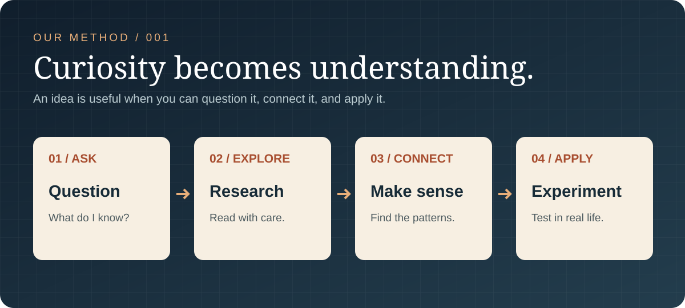

The Secret Link Between “Sounding Good” and “Being Right”
How do we tell an elegant argument from a true one? An exploration of writing, reasoning and judgment.
Read the essay ↗What if the most useful thing you discover today isn't an answer, but a better question? Welcome to a journal exploring science, systems, books and the art of clear thinking.
How do we tell an elegant argument from a true one? An exploration of writing, reasoning and judgment.
Read the essay ↗What competition, differentiation and value creation can teach us about better choices.
Read the essay ↗Why scientific thinking and a culture of research matter for India's future.
Read the essay ↗Currently reading: The Almanack of Naval Ravikant, edited by Eric Jorgenson. A collection of ideas on wealth, judgment and happiness—and an invitation to think for yourself.
Research is not a collection of clever answers. It is a habit of asking honest questions, examining evidence and testing ideas in the real world.
Turn an assumption into a question that can actually be explored.
Compare sources, study the details, and notice what's missing.
Link an idea from one field to a problem in another.
Test the prediction, notice exceptions, and revise what you believe.

Explore a personal collection spanning software, mathematics, economics, psychology, science and literature. This is a reading catalog—not a claim that every title has been read or endorsed.